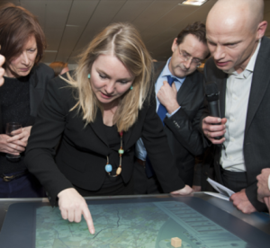

Het doel van het PICO platform is om inzicht en overzicht te verschaffen aan iedereen die te maken heeft met duurzame energieprojecten. Zo spreekt iedereen dezelfde taal en kan het gaan over de inhoud. Gebruikers en betrokkenen krijgen relevante informatie over energie, CO2, kosten en opbrengsten om samen een strategie te vormen voor een duurzaam project dat werkt.
Door eenvoudig inzicht in de kansen van duurzame energie op elke plek worden naar verwachting meer duurzame initiatieven gelanceerd. Dit inzicht en overzicht komt uit het duurzaamheidsplatform.
De data en informatie in het PICO platform is voor heel Nederland beschikbaar. Gegevens over de leeftijd en herkomst van de data, de zgn metadata, kan altijd worden bekeken zodat duidelijk is hoe de data tot stand is gekomen en hoe actueel deze nog is.
Met het duurzaamheidsplatform van PICO kun je data bekijken, analyses uitvoeren met modellen van o.a. TNO, en de resultaten combineren. Daarnaast zijn er partijen die in combinatie met het duurzaamheidsplatform procesbegeleiding aanbieden om uw duurzame initiatief van begin tot eind in goede banen te leiden.
In PICO gaat het om het gebied. De insteek is dat strategievorming nodig is op een grotere schaal dan de individuele woning om effectief te zijn in het behalen van duurzaamheidsdoelstellingen. Bovendien levert dit schaalvoordelen op, en maakt het de weg vrij voor duurzame toepassingen die niet geschikt zijn voor een enkele woning, maar die op een grotere schaal wel mogelijk zijn.